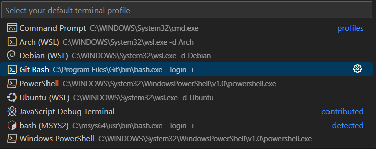
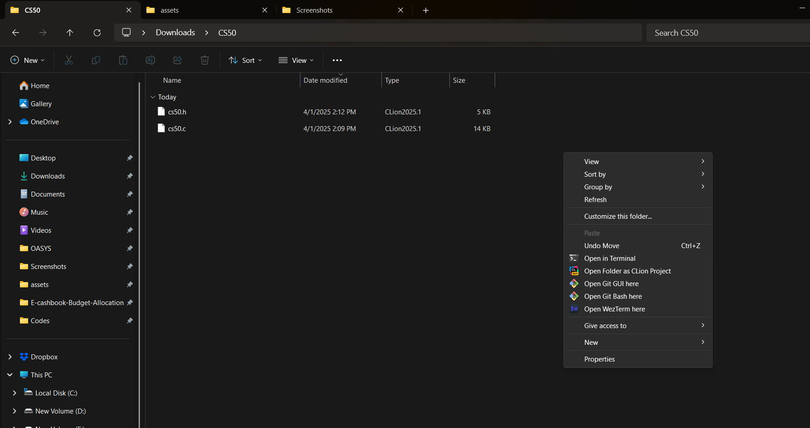

Setting Up CS50 Library (cs50.h) in VS Code on Windows 11
Akashdip BaralApril 1, 2025

The CS50 Library (cs50.h) provides beginner-friendly functions for handling user input in C programs. While it's easy to set up on Linux and macOS, Windows users need to install MinGW, configure VS Code, and manually install the CS50 library.
Step 1: Install Git and MinGW
Before setting up the CS50 library, you need a working C compiler and a Linux-like terminal on Windows.
1. Install Git for Windows:
- Download and install Git for Windows.
- Git includes Git Bash, a terminal that provides Linux commands (
sed,awk,push,pull), making it useful for development.
2. Install MinGW:
- Download MinGW-w64.
-
Install the following packages:
- GCC (GNU Compiler Collection)
- Make (For compiling projects)
- GDB (For debugging)
- Ensure MinGW binaries (
binfolder) are added to your Windows PATH.
3. Verify Compiler Installation:
Open Git Bash or Command Prompt and check if gcc is installed:
gcc --versionIf it returns a valid GCC version, the compiler is correctly installed.
Step 2: Write and Compile a Simple C Program
To ensure that your compiler works, write a simple Hello World program:
1. Open VS Code
Open VS Code and add an empty folder of your choice.
2. Create a C File
Inside the directory, create a new file named hello.c and add the following code:
#include <stdio.h>
int main(void)
{
printf("Hello, World!\n");
return 0;
}3. Set Git Bash as Default Terminal
Press the combination, Ctrl+Shift+P. This should open the command pallet above. In the command pallet type "Terminal: Select Default Profile" and select the first option.
Now select Git Bash as your default profile
4. Compile the Program
Open the terminal by pressing Ctrl+Shift+` (' ` ' is the key above Tab) and it should open the bash terminal below the code editor. In the terminal Compile the C program using gcc:
gcc hello.c -o hello.exe5. Run the Program
Execute the compiled program:
./hello.exeIf the output displays Hello, World!, then your compiler is correctly set up!
Step 3: Download and Compile the CS50 Library Locally
Since cs50.h is not included by default in Windows, you need to manually install it.
1. Download the CS50 Library Files
- Visit: CS50 Library Source
-
Download the following files:
cs50.ccs50.h
Click on the file and after its opened, click on "Download raw file" on the top right corner of the editor
2. Compile the CS50 Object File
Open the download folder and copy both 'cs50.h' and 'cs50.c' to another newly created folder. In the folder Right Click and then select "Show more options", then select "Open Git Bash here"
Run the following command to compile the object file:
gcc -c -ggdb -std=c99 cs50.c -o cs50.o3. Create the CS50 Library Archive (.a file)
Generate a static library file using:
ar rcs libcs50.a cs50.o4. Verify the Generated Files
List the contents of the directory to ensure all necessary files are created:
lsExpected output:
cs50.c cs50.h cs50.o libcs50.a5. Move the Library and Header Files to MinGW
Copy the files to the appropriate MinGW directories:
mv cs50.h /C/MinGW/include/mv libcs50.a /C/MinGW/lib/Note: Ensure that cs50.h is in C:\MinGW\include and libcs50.a is in C:\MinGW\lib.
Step 4: Test the CS50 Library
Now that the CS50 library is installed, let's test if it's working correctly.
1. Create a New File `test.c`
Create a new file named test.c and add the following code to test the get_string function:
#include <stdio.h>
#include <cs50.h>
int main(void)
{
printf("Please input a string: ");
string s = get_string();
int n = 0;
while (s[n] != '\0')
{
n++;
}
printf("Your string is %i chars long\n", n);
}2. Compile the Program Using the CS50 Library
Use gcc to compile the program with the CS50 library:
gcc test.c -o test.exe -lcs503. Run the Program
Execute the compiled program to check if the CS50 library works:
./test.exeIf the program compiles successfully, accepts string input, and counts the string length, then cs50.h is correctly set up!